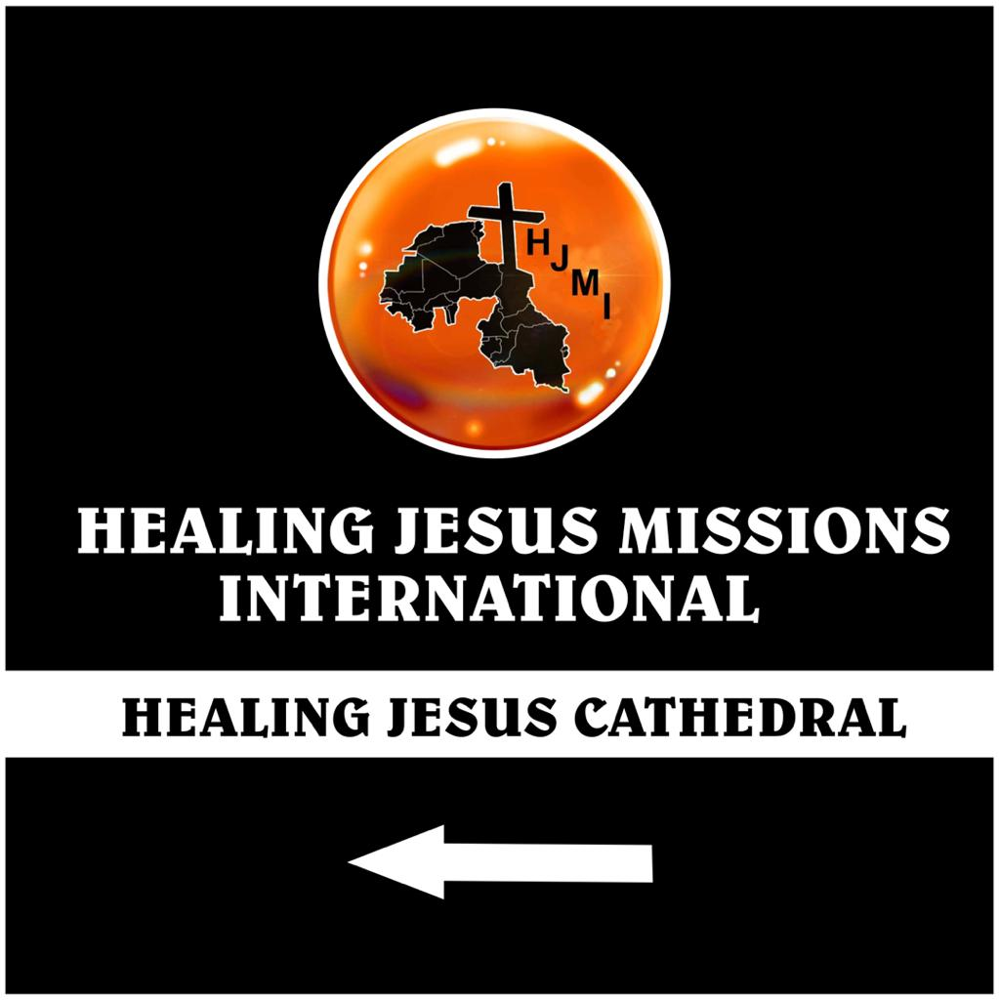
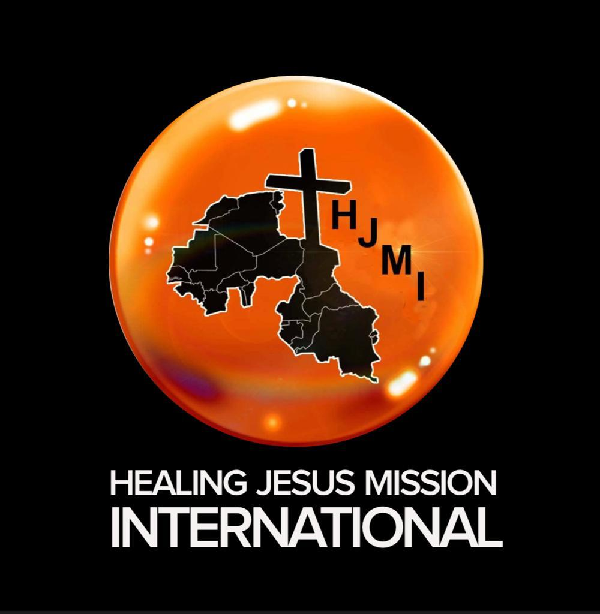

HEALING JESUS MISSION INTERNATIONAL, DENU APARCHE
The Healing Jesus Mission International Denu, currently being headed by
Rev Senanu Innocent Kpormegbey has a population of Seven Hundred Souls.
The church holds two services every Sunday. The first Service, which is an
Ewe Service starts from 7:30am and ends at 9:30 am. The second Service
starts from 10:00am to 12 noon and it's mainly English Service.
BRANCHES UNDER DENU HJMI
Denu Mission currently has 7 active branches pastored by Pastors and
Minister Shepherds.The branches are
1. ALETAME
2. WUDOABA
3. ADAFIENU
4. HATSUKOPE
5. ADINA
6. AGORKO
7. AKAME
PASTORS AND MINISTER SHEPHERDS

